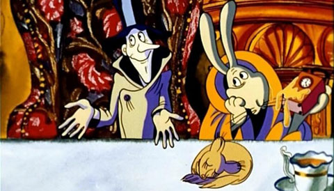
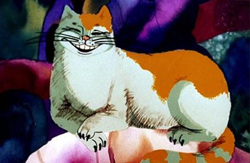

Приветствие Глава I Глава VI Глава VII
- Не понимаю, - сказала Алиса.
- Еще бы! - презрительно встряхнул головой Болванщик. - Ты с ним небось никогда и не разговаривала!
- Может, и не разговаривала, - осторожно отвечала Алиса. - Зато не раз думала о том, как бы убить время!
- А-а! тогда все понятно, - сказал Болванщик. - Убить Время! Разве такое ему может понравиться! Если 6 ты с ним не ссорилась, могла бы просить у него все, что хочешь. Допустим, сейчас девять часов утра - пора идти на занятия. А ты шепнула ему словечко и - р-раз! - стрелки побежали вперед! Половина второго - обед!
 